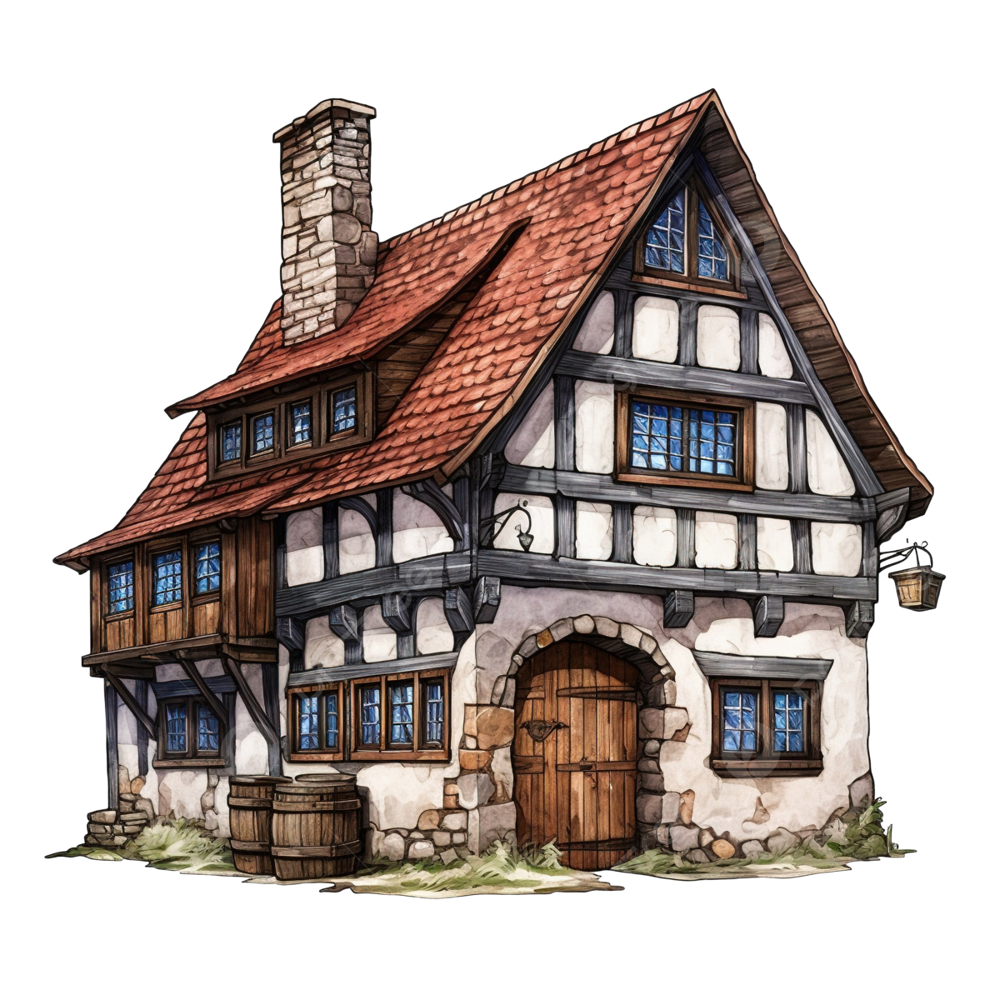
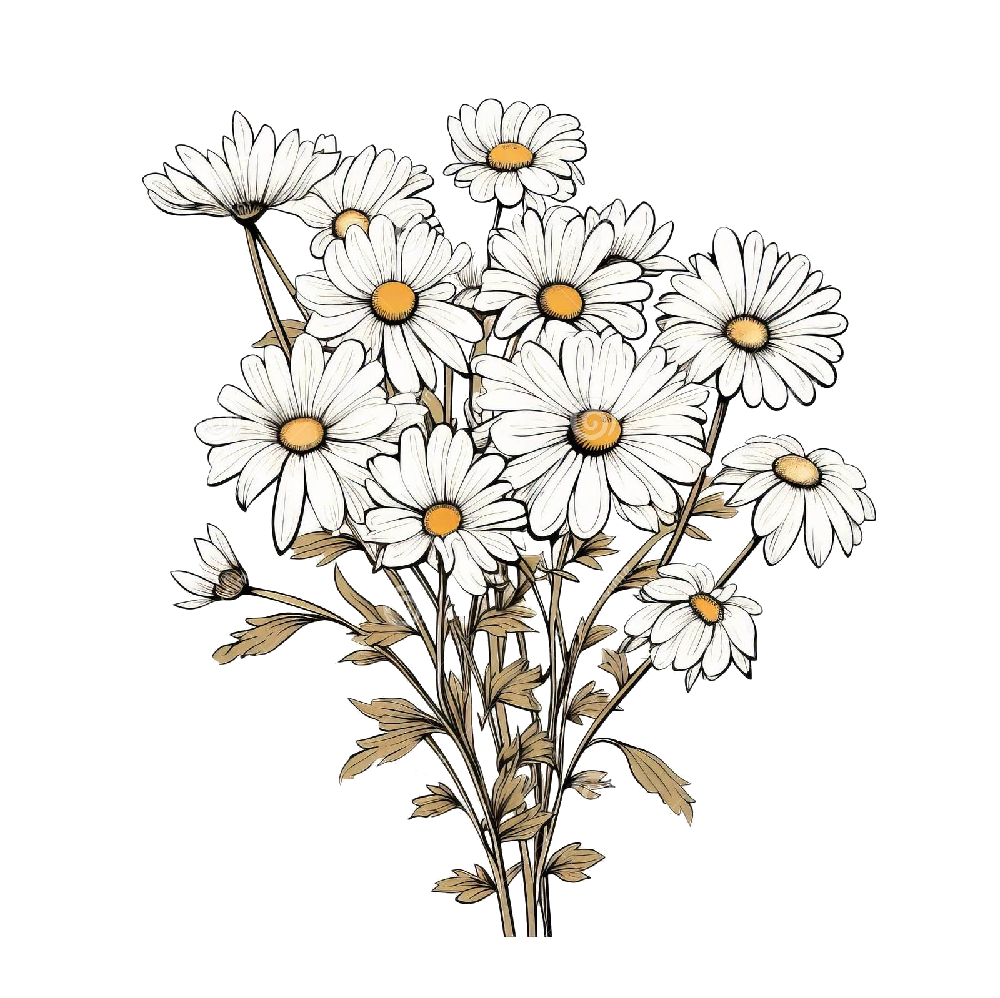

Products

- Sidra (“Cider”) – Traditional Basque hard cider.
- Itsaso (“Sea”) – Very light and crisp cider.
- Haize (“Wind”) – Floral and refreshing.
- Egur (“Wood”) – Extra-dry, oak-aged cider.
- Zilar (“Silver”) – Champagne-style bubbly cider.
- Miel (“Honey”) – Classic mead.
- Sagar (“Apple”) - Mead with apple juice.
- Urdin (“Blue”) - Blueberry Melomel.
- Gorri (“Red”) - Cherry Melomel.
- Aranbeltz (“Black Plum”) - Blackberry & Plum Melomel.
- Haritz (“Oak”) – Barrel-aged mead.
- Ilargi (“Moon”) – Elderflower-infused mead.
- Sugaar (“Dragon God”) – Fiery mead with chili heat.
- Eguzki (“Sun”) – Citrus and saffron-infused mead.

- Nero (Latin, “Black”) – Blackberry wine, rich and deep in flavor.
- Acinus (Latin, “Berry”) – A tart, medieval-style cherry wine.
- Myrdöl (Old Norse, “Myrtle”) – A resinous bog myrtle ale, common in Viking and Germanic brewing.
- Birken (Middle High German, “Birch”) – A lightly fermented beer made with birch sap.
- Halig (Old English, “Holy”) – A sacred, mildly bitter mugwort ale used in monasteries.
- Parva (Latin, “Small”) – A mild, daily table beer (~2%) for hydration.
- Spruce (Old English, “Spruce”) – A spruce beer brewed with pine and fir tips.
- Trigo (Old Castilian, “Wheat”) – A rustic, lightly soured oat and barley ale.
- Hippocras (Latin, “Physician”) – A spiced honey wine with cinnamon, ginger, and nutmeg.
- Fuego (Old Castilian, “Fire”) – A saffron and chili-infused heated wine.
- Callamellus (Latin, “Caramel”) – A bochet mead with deep caramelized flavors.
- Feu (Old French, “Fire”) – A berry bochet blended with wild blackberries.
- Honignuss (Middle High German, “Honey Nut”) – A hazelnut-infused bochet mead.
- Mellagranum (Latin, “Honey Grain”) – A classic braggot with malted grains and honey.
- Ölgyod (Old Norse, “Ale of the Gods”) – A smoky, oak-aged braggot brewed for Viking feasts.
- Stark (Middle High German, “Strong”) – A strong, dark braggot aged in oak barrels.

- Iturri (“Fountain”) – Unfermented apple with light spices.
- Urki (“Birch”) – Birch beer, made with birch sap and wintergreen.
- Izpiliku (“Lavender”) – Light herbal soda with lavender and citrus.
- Haritz Goxo (“Sweet Oak”) – Oak-infused botanical drink with honey.
- Zuhaitza (“Tree”) – Spruce beer, rich in vitamin C, with citrus notes.
- Zingira (“Swamp”) – Classic ginger beer with natural carbonation.
- Erregina (“Queen”) – Spiced molasses & vanilla root beer.
- Makil Goxo (“Sweet Stick”) – A cinnamon-honey herbal infusion.
- Izurde (“Dolphin”) – Butter beer, creamy and lightly spiced with caramel notes.
- Udaberri (“Spring”) – Classic homemade lemonade with honey and mint.
- Mendiur (“Mountain Water”) – Mineral water infused with herbs and fruit.
- Distira (“Spark”) – Citrus-ginger tonic with honey.
- Txiki Ura (“Little Water”) – Elderflower & honey infusion for kids
- Izotz (“Ice”) – Frozen fruit slush with fresh juice.